프로젝트 포트폴리오
김창은
AI & Quantitative Research · Financial Engineering
AI Agent 기반 STO 기초자산 사회적 가치평가
정형·비정형 데이터를 Agent가 유기적으로 수집하고, 근거 기반 정성평가 보고서로 전환하는 시스템입니다. 상업용 부동산과 음악 저작권을 기초자산으로 하여 구현했습니다.
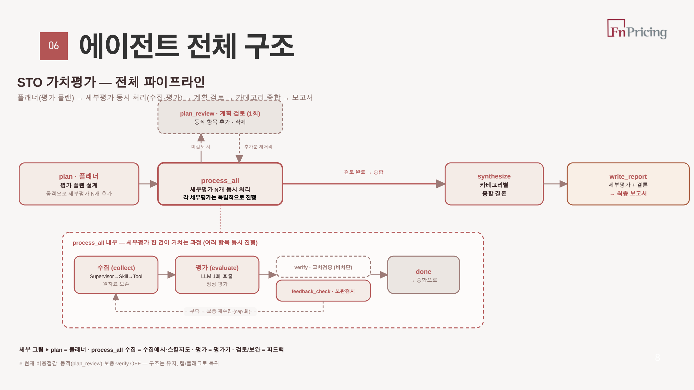
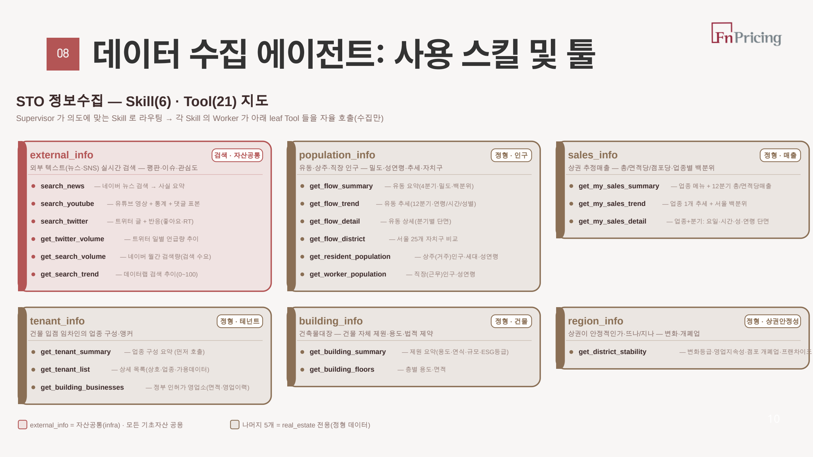
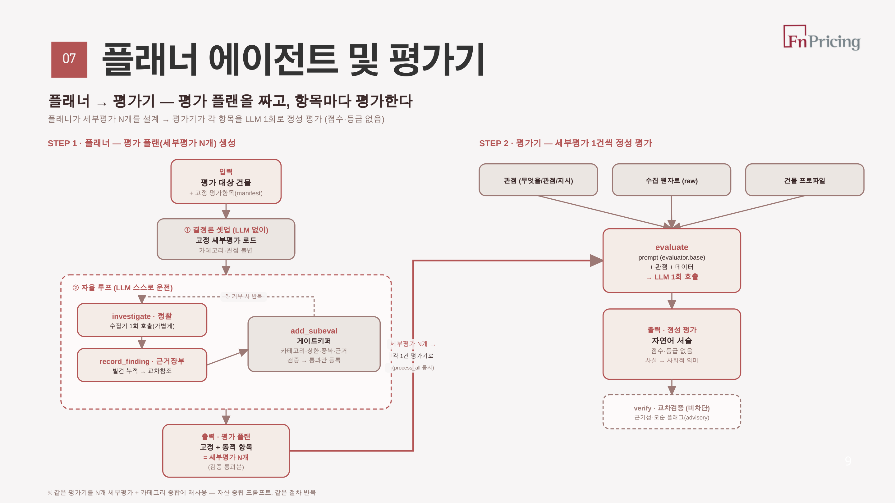
문제
STO 가치는 미래 현금흐름뿐 아니라 대중 관심, 지역사회 관계, ESG와 브랜드 신뢰에도 영향을 받습니다. 비재무 데이터의 비정형성을 고려해 자동화된 수집 파이프라인을 구축해야 했습니다.
핵심 접근
Planner가 평가 항목을 구성하고, 6개 Skill·21개 Tool이 원자료를 수집합니다. 순서효과를 줄이기 위해 수집과 평가를 분리하고 원문을 보존한 뒤 세부평가를 병렬 처리했습니다.
내 역할
사회적 가치 평가체계, Agent 아키텍처, Tool 인터페이스와 보고서 생성 흐름을 설계했습니다. 동적 평가항목의 중복·근거 검증과 재처리 상한도 코드로 통제했습니다.
결과
중간 PoC를 완료해, 플래너·평가기 구조로 상업용 부동산 여러 건에 대해 근거 기반 사회적 가치 보고서를 자동 생성했습니다. 음악 저작권 평가로 확장성을 확인했으며 Q&A와 Human-in-the-loop를 고도화 중입니다.
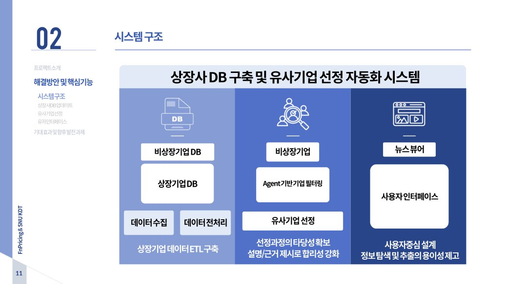
Agentic AI 기반 비상장기업 유사기업 선정
약 2,500개 상장사의 공시·재무·사업 데이터를 정규화하고, 비상장기업의 비교기업 후보와 선정 근거를 자동 생성하는 시스템입니다.
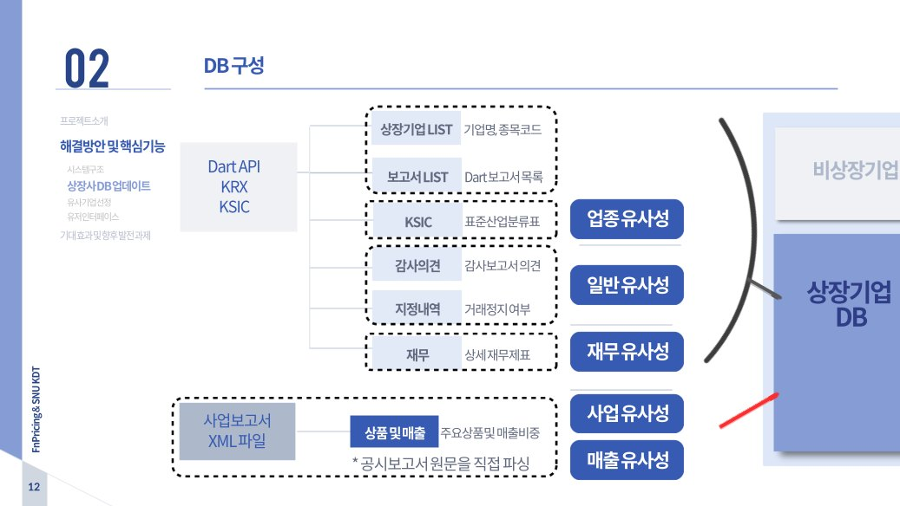
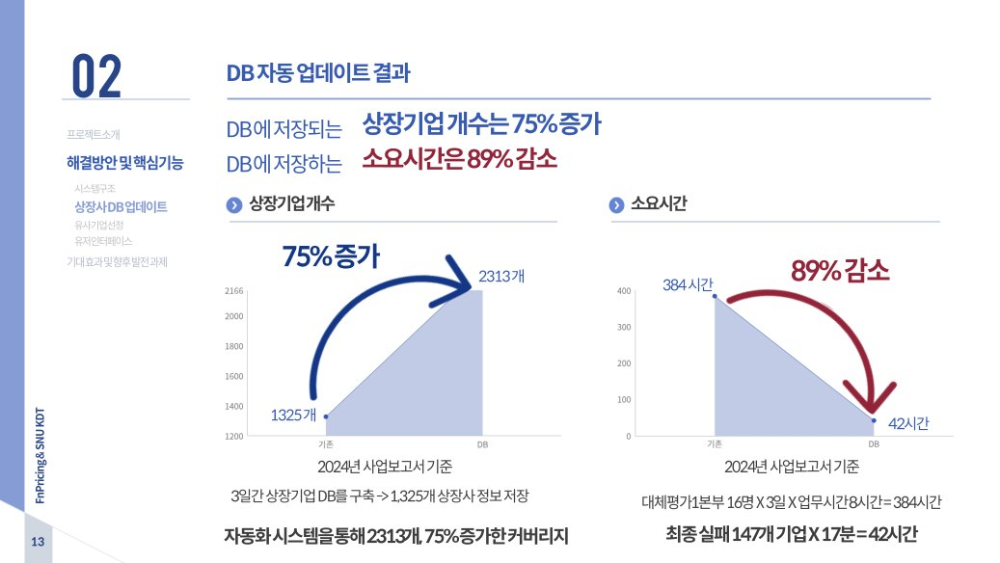
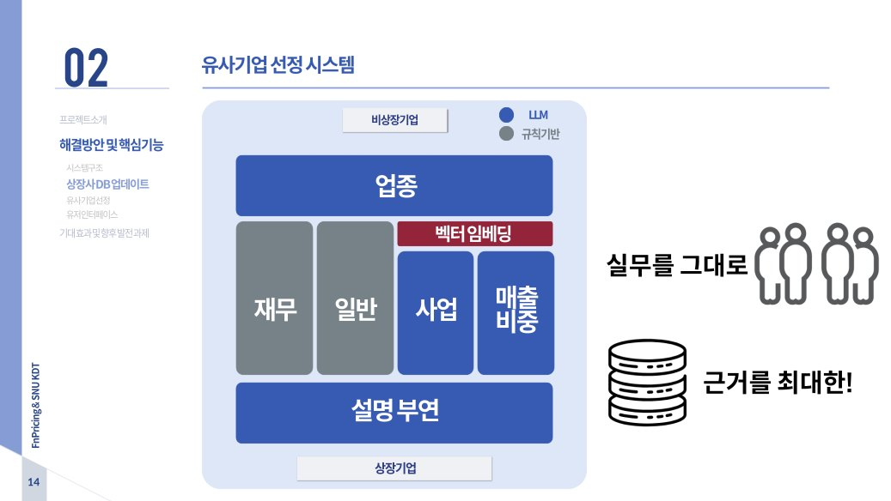
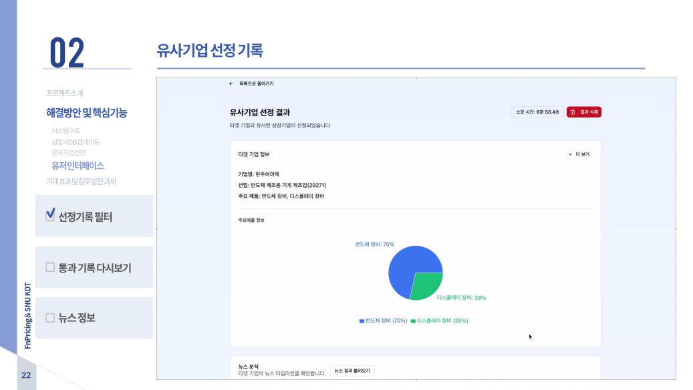
문제
상장사 DB 갱신과 유사기업 선정이 수작업에 의존해 시간이 오래 걸리고, 평가자에 따라 후보와 근거가 달라지는 문제가 있었습니다.
핵심 접근
업종·재무·일반 조건은 규칙으로 필터링하고, 사업·매출 구조는 벡터 임베딩과 LLM으로 비교했습니다. 후보 생성과 설명 생성을 분리해 결과를 추적할 수 있게 했습니다.
내 역할
상장사 DB ETL, 5개 유사성 축, Agent workflow와 API·UI 연동을 구현했습니다. LangGraph·AutoGen, ChromaDB를 사용했습니다.
결과
DB 커버리지와 구축 시간을 개선했고, 기업 1개당 평균 5분 22초·약 0.14달러로 후보를 생성했습니다. 결과는 자동 확정하지 않고 평가자가 선정 사유를 검토하도록 설계했습니다.
LLM/OCR 기반 투자설명서 발행정보 자동화
서로 다른 형식의 투자설명서를 읽어 발행정보를 추출하고, 평가 시스템이 사용할 수 있는 JSON으로 변환하는 Document AI 파이프라인입니다.
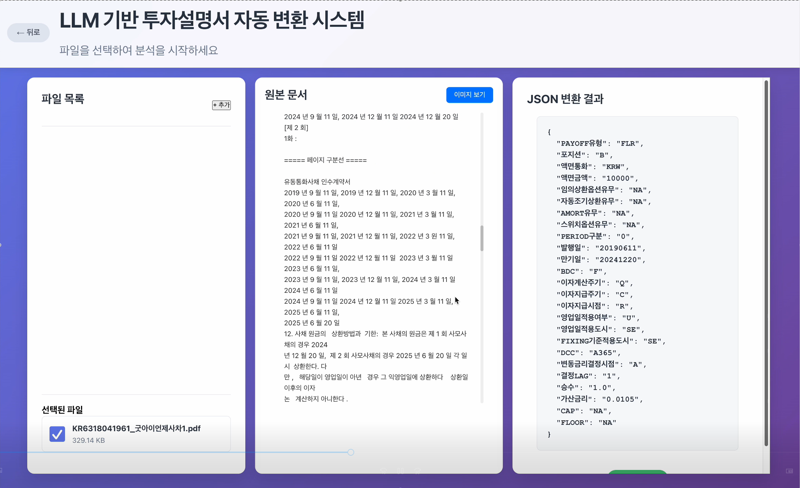
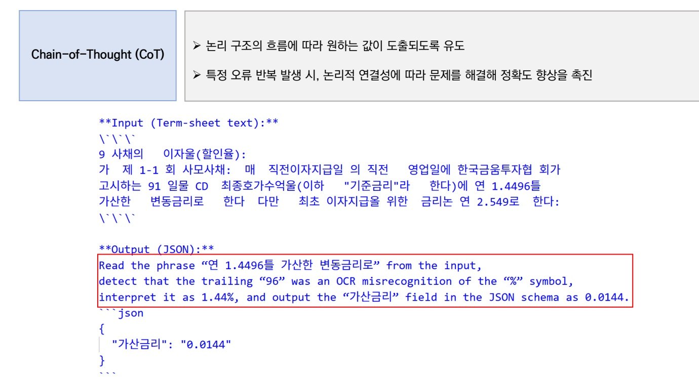
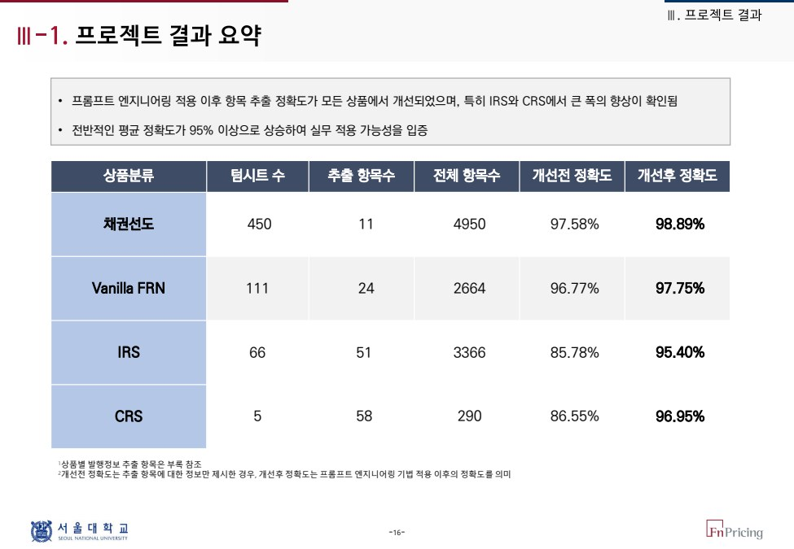
문제
PDF·DOCX·스캔 이미지가 혼재하고 상품마다 문서 양식과 추출 필드가 달라, 규칙 기반 파서만으로는 수기 입력을 대체하기 어려웠습니다.
핵심 접근
OCR과 표 파싱 후 LLM이 상품별 스키마에 맞춰 정보를 추출하도록 했습니다. Role·Few-shot·Chain-of-Thought 프롬프트를 오류 필드 중심으로 적용하고 원문 대조 검증을 붙였습니다.
내 역할
문서 파싱부터 프롬프트, JSON Schema, 후처리·검증 로직과 PoC UI까지 전 과정을 설계하고 구현했습니다. 특히 OCR 오인식 문제 해결을 위한 프롬프팅 기반 후처리 설계에 집중했습니다.
결과
추출 회당 약 0.1달러 비용으로 처리시간을 15배 이상 단축했습니다. 채권선도 98.9%, FRN 97.8%, IRS 95.4%, CRS 97.0%의 최종 정확도를 확보하고 평가엔진 연동 구조를 구축했습니다.
AI Wealth 글로벌 지수 예측 모델
미국 주식·채권시장에서 검증된 선행연구의 변수 체계와 예측 방법론을 글로벌 시장으로 확장하고, MSCI 주가, 원자재, 채권 지수 등의 예측을 위한 국가별 거시경제 데이터셋을 구축했습니다.
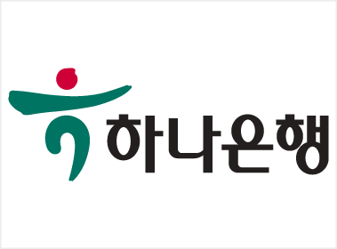
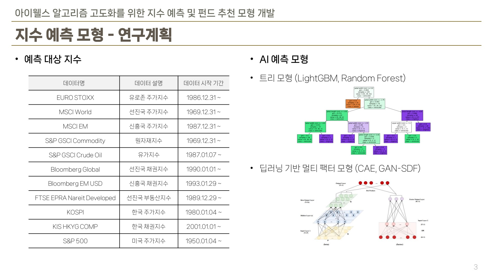
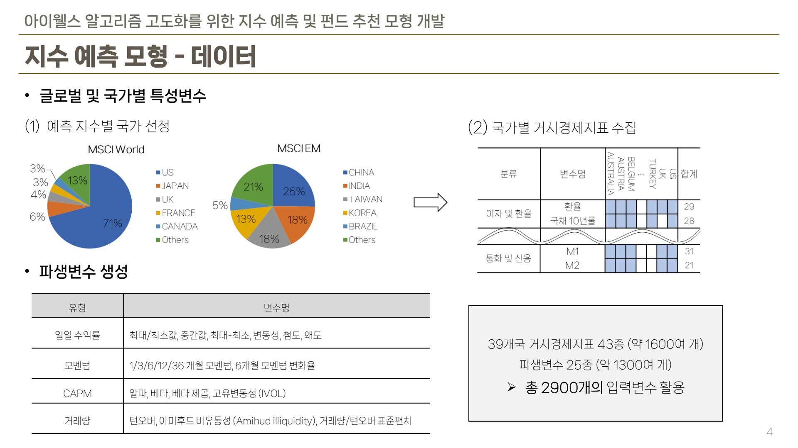
문제
미국 시장에서 검증된 예측 변수와 모형을 글로벌 지수에 적용하려면 국가 구성, 공표 시차, 빈도와 결측 구간이 서로 다른 거시데이터를 동일한 기준으로 정렬해야 했습니다.
핵심 접근
Gu et al. (2020)의 미국 주식 예측과 Bianchi et al. (2021)의 미국 채권 예측에서 검증된 거시·시장 변수 체계를 출발점으로 MSCI World·EM 구성국 데이터를 수집했습니다. 시차·정상성·월별 변환을 자동화하고 시장 특성 파생변수를 결합했습니다.
내 역할
예측 지수별 국가 선정, 39개국 거시지표 코드 매핑과 전처리 파이프라인을 구축했습니다. Random Forest·LightGBM과 Conditional Autoencoder·GAN-SDF의 학습·검증에도 참여했습니다.
결과
국가별 거시지표 약 1,600개와 파생변수 약 1,300개를 결합한 2,900개 입력변수 데이터셋을 완성했습니다. 지수별로 트리 모형과 딥러닝 멀티팩터 모형을 비교할 수 있는 연구 기반을 마련했습니다.
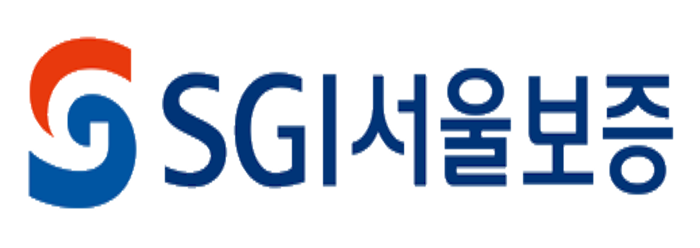
기계학습 기반 보증보험 사고예측 및 요율모형
변동성이 큰 보험사고 시계열에서 추세 신호를 분리해 학습 타깃을 구성하고, 상품별 청구 위험의 상승을 1·6개월 선행 예측한 프로젝트입니다.
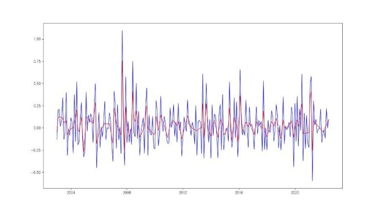
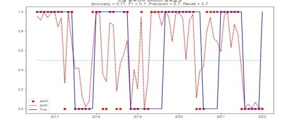
문제
보증보험은 경기변동에 민감하지만, 요율 조정은 과거 경험통계에 의존해 현행 경기상황을 반영하지 못하고 경기에 후행했습니다. 경기를 요율에 반영하는 방법은 언더라이터 개인의 판단에 맡겨져 있었습니다.
핵심 접근
경기선행·동행지표를 설명변수로, 사고율의 대리변수인 청구건수·청구빈도의 증감을 미리 예측하는 구조로 설계했습니다. L1 trend filtering으로 구조적 추세는 유지하며 노이즈를 완화하고, 정상성 변환과 시차변수를 적용해 1·6개월 분류 타깃을 구성했습니다.
내 역할
타깃 시계열 진단과 L1 filtering 기반 전처리, 상품별 학습 데이터 구성, 세 모델의 하이퍼파라미터 탐색과 시간순 성능 검증을 구현했습니다.
결과
12개 상품군과 두 예측기간에 대해 Accuracy·F1·Precision·Recall을 비교했습니다. 일부 상품·기간에서 F1과 정확도 0.7 이상을 확인해, 경기 후행이 아닌 선제적 요율 조정의 근거로 인수 기준과 요율 검토에 연결하는 활용안을 제안했습니다.